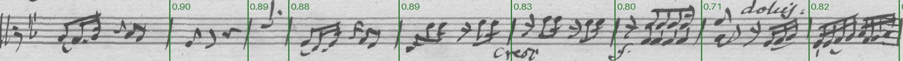
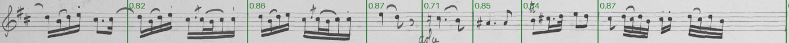
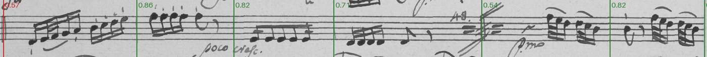
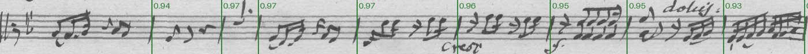
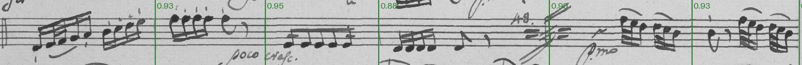
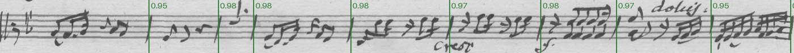
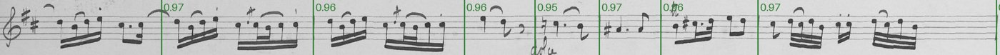
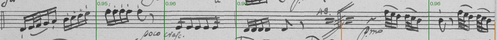

D-FINE smallexperiment
A transformer detector (DETR family, 2024), fine-tuned to box bar lines on the same tiles; Apache-licensed.
D-FINE paper (2024) · D-FINE code · Hugging Face transformers docs · pretrained weights · our training script
Model card
- Architecture
- D-FINE: a real-time DETR (transformer decoder over a convolutional backbone) that refines box edges as distributions; no NMS
- Parameters
- about 10 million (published, small)
- Starting weights
- ustc-community/dfine-small-coco (COCO), via Hugging Face transformers
- Licence
- Apache-2.0
- Input
- a 640 px tile of a straightened staff line, resized to 640 × 192
- Output
- a fixed set of boxes with confidences; a bar line is the centre of a box above the threshold
- Where it runs
- experiments only; trains on the Mac's GPU with a one-line workaround (dfine_patch.py)
- Training time
- 102 minutes
- Per line
- 206 ms on this Mac
Data that went into it
Every counted staff line on the editor's reviewed music pages, straightened along the editor's bend, with the editor's bar lines as the truth. Lines are split at random (seed 1), stratified by source; the test lines are never trained on. Cells: lines / bar lines.
| hand | source | part | pages | train | validation | test |
|---|---|---|---|---|---|---|
| KHM | D-B_KHM-602 | Viola | 3 | 18 / 147 | 1 / 9 | 6 / 42 |
| KHM | D-B_KHM-602 | Cello | 3 | 17 / 143 | 2 / 15 | 5 / 41 |
| KHM | D-B_KHM-602 | Violin I | 3 | 21 / 136 | 2 / 12 | 7 / 53 |
| KHM | D-B_KHM-602 | Violin II | 3 | 19 / 150 | 4 / 29 | 3 / 23 |
| KHM | D-B_KHM-603 | Viola | 4 | 21 / 118 | 1 / 7 | 4 / 27 |
| KHM | D-B_KHM-603 | Cello | 4 | 16 / 97 | 2 / 12 | 7 / 43 |
| KHM | D-B_KHM-603 | Violin I | 4 | 22 / 121 | 1 / 6 | 5 / 25 |
| KHM | D-B_KHM-603 | Violin II | 4 | 22 / 112 | 1 / 3 | 6 / 33 |
| Paris A | F-Po_RES-507-14 | Cello | 4 | 15 / 132 | 1 / 12 | 5 / 38 |
| Paris A | F-Po_RES-507-14 | Violin I | 4 | 18 / 137 | 3 / 23 | 4 / 30 |
| Paris B | F-Po_RES-507-14 | Viola | 3 | 16 / 114 | 4 / 32 | 6 / 44 |
| Paris B | F-Po_RES-507-14 | Violin II | 3 | 20 / 139 | 3 / 18 | 5 / 32 |
| all | 42 | 225 / 1546 | 25 / 178 | 63 / 431 |
Tiles 640 px wide (stepping 480) of the straightened lines, at the labeler's render size, each bar line a box the staff's height and a staff space wide. A tenth of the training lines are validation: early stopping, the confidence threshold. The test lines are never seen. Tiles: 1058 training, 115 validation.
- sources/G226/D-B_KHM-602.pdf: labels at 0510242 2026-10-06
- sources/G227/D-B_KHM-603.pdf: labels at 8fd9a4d 2026-10-02
- sources/G228/F-Po_RES-507-14.pdf: labels at 1ffcaee 2026-10-06
KHM: D-B KHM 602 and 603 (Op. 48 Nos. 1, 2), one copyist · Paris A: F-Po RES 507 (14) (No. 3), Violin I and Cello: one paper and hand · Paris B: F-Po RES 507 (14), Violin II and Viola: another paper and hand
How training works
Instead of scoring anchors, a transformer decoder sends a fixed number of queries over the tile's features; each query becomes one box or "nothing". Training matches queries to the editor's bar lines one to one (the Hungarian algorithm) and penalises the mismatch, so there is no overlap suppression afterwards. D-FINE's contribution is to predict each box edge as a probability distribution, refined layer by layer.
Our run: AdamW (learning rate 1e-4, 1e-5 for the backbone), batches of 8 tiles, random horizontal flips, 40 epochs; the epoch with the lowest validation loss is kept. Resumable after the 2-hour job limit (--resume).
On the Mac's GPU, transformers' D-FINE fails in training ("mat2 must be a matrix"): one layer weights its bin probabilities with F.linear and a 1-D vector, whose backward pass PyTorch's MPS backend mishandles (pytorch/pytorch#188891; a fix, #188931, is in review). dfine_patch.py writes the same sum as a matrix product: identical results, and about 2.8 times faster than training on the CPU.
Settings
- epochs
- 40
- batch
- 8 tiles
- optimizer
- AdamW, weight decay 1e-4
- learning rate
- 1e-4 (backbone 1e-5), constant
- gradient clipping
- 0.1
- input
- 640 × 192
- augmentation
- horizontal flips
- device
- mps (with dfine_patch.py)
The losses
- What a loss is
- A number the training lowers, batch by batch: how far the detector's boxes and scores on the training tiles are from the editor's, after matching each of its queries to at most one bar line. No units; averaged per tile. The training and validation losses are not comparable: in training D-FINE adds denoising queries (noisy copies of the true boxes to repair) and losses at every decoder layer, which evaluation leaves out, so the training loss is about ten times the validation loss by construction. Watch each line's own trend.
- Its parts
- A classification loss (varifocal: the score should equal the box's overlap with its bar line), an L1 distance and a generalised-overlap (GIoU) loss on the boxes, and D-FINE's own losses on the edge distributions, summed over the decoder's layers.
- How it relates to our goal
- As with the other detectors, much of it is about box edges we don't use; whether a bar line is found depends on the score and the box's centre, shown below on the validation lines.
Training
- train
- validation
Not comparable with each other: training adds denoising and per-layer losses that validation leaves out (see The losses). The kept weights are from the epoch with the lowest validation loss.
Trained 40 epochs in 102 minutes on the Mac's GPU; lowest validation loss at epoch 8.
- errors (false + missed)
- false
- missed
Each checkpoint at the confidence threshold best for it on these lines.
- on a bar line (177)
- not on a bar line (24)
Detections below 0.05 aren't reported. 1 bar line had no detection near it at all. Detections right of the threshold are kept: blue ones are found bar lines, orange ones false bar lines; blue left of it are bar lines missed at this threshold. The wider the empty gap between the colours, the less the threshold matters.
What it found during training
One validation line per hand at the first, middle and last checkpoint: found (with confidence) false missed (lower half).








Results on the test lines
A prediction counts if within 0.6% of the page width of one of the editor's bar lines (one to one). Errors are false bar lines (a delete) plus missed ones (a click). Confidence threshold 0.6, chosen on validation lines; 206 ms per line on this Mac.
| hand | errors |
|---|---|
| KHM | 18 (9 false, 9 missed; 6.3 per 100) |
| Paris A | 10 (1 false, 9 missed; 14.7 per 100) |
| Paris B | 7 (3 false, 4 missed; 9.2 per 100) |
| all | 35 (13 false, 22 missed; 8.1 per 100) |
Terms
- Found, false, missed
- Our measure, and the one that matters: a bar line is found if the model puts one within 0.6% of the page width (about a staff space) of the editor's; a false one is a bar line where the editor has none (a delete in the labeler), a missed one an editor's bar line with none near it (a click). Errors = false + missed.
- Confidence
- The detector's score, 0 to 1, that a box holds a bar line. Every box comes with one; we keep the boxes above a threshold, chosen on the validation lines to make the fewest errors.
- Precision, recall
- Of the boxes kept, the share that are bar lines (precision); of the bar lines, the share that were boxed (recall). Ultralytics reports them per validation tile at its own confidence cut-off.
- Box
- What the detectors learn to draw: a rectangle the staff's height plus half a space each way, one staff space wide, centred on each of the editor's bar lines. Its edges are a convention we chose; only its centre's x is used.
- Overlap (IoU)
- How much a predicted box and a true box coincide: the area they share divided by the area either covers. 1 is the same box; 0.5 is a box shifted by about a third of its width.
- mAP50
- Mean average precision: precision averaged over every confidence threshold (the area under the precision-recall curve), counting a box right if its overlap with a true box is at least 0.5. Close to our measure: a bar line boxed roughly in the right place.
- mAP50-95, box tightness
- The same averaged over overlap cut-offs 0.50, 0.55 … 0.95, so it rewards boxes whose edges match the true box exactly (box tightness). Our measure ignores the edges, so this keeps rising after the bar lines are already found.
- Epoch, iteration
- An epoch is one pass over every training tile (YOLO). An iteration is one batch of 8 tiles (Detectron2); 3000 iterations is about 23 passes over the tiles.
- Training, validation, test lines
- Training lines teach the model; validation lines (a tenth of the training lines, held out) pick the epoch and threshold and show progress; test lines are scored once at the end and never influence anything.
Future directions
- The Apache-licensed choice if a detector should ship with the labeler.
- Drop dfine_patch.py once PyTorch ships the fix (#188931); report the 1-D F.linear to transformers so D-FINE works on MPS for everyone.
- Its larger sizes (medium, large) if small plateaus; RT-DETR v2 as a sibling to compare.